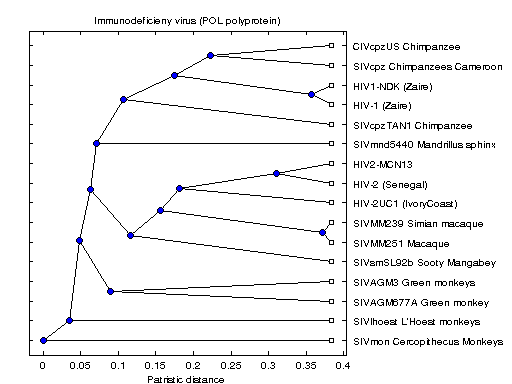

Distributed Analysis of the Origin of the Human Immunodeficiency Virus
This demo shows how the Parallel Computing Toolbox™ can be used to perform pairwise sequence alignment (PWSA). PWSA has multiple applications in bioinformatics, such as multiple sequence analysis and phylogenetic tree reconstruction. We look at a PWSA that uses a global dynamic programming algorithm to align each pair of sequences, and we then calculate the pairwise distances using the Tajima-Nei metric. This gives us a matrix of distances between sequences that we use for inferring the phylogeny of HIV and SIV viruses. PWSA is a computationally expensive task with complexity O(L*L*N*N), where L is the average length of the sequences and N is the number of sequences [Durbin, et al. Cambridge University Press, 1998].
For details about the computations, view the code for pctdemo_setup_hiv.
Prerequisites:
Related demos:
Contents
Analyze the Sequential Problem
First, we look at how the computations in the sequential demo fit into the model introduced in the Dividing MATLAB Computations into Tasks demo. The call to seqpdist is the most computationally intensive part of the sequential demo, and it basically performs the following parameter sweep:
for all pairs (s1, s2) formed from the elements of seq
distance(s1, s2) = seqpdist(s1, s2);
endThe distance is, of course, symmetric, i.e., seqpdist(s1, s2) = seqpdist(s2, s1). Because seqpdist renormalizes the distances based on the entire input sequence seq, we have to calculate that renormalization factor ourselves in this demo, and we also need to identify the pairs between which to measure the distance.
Since we calculate a rather large number of distances, we have each task calculate several distances. This requires us to write a simple wrapper task function that invokes seqpdist.
Load the Demo Settings and the Data
The demo uses the default configuration when identifying the scheduler to use. The configurations documentation explains how to create new configurations and how to change the default configuration. See Customizing the Settings for the Demos in the Parallel Computing Toolbox for instructions on how to change the demo difficulty level or the number of tasks created.
[difficulty, sched, numTasks] = pctdemo_helper_getDefaults();
The pctdemo_setup_hiv function retrieves the protein sequence information from the NCBI GenBank® database, and the difficulty parameter controls how many protein sequences we retrieve. You can view the code for pctdemo_setup_hiv for full details.
[fig, pol, description] = pctdemo_setup_hiv(difficulty); numViruses = length(pol); startTime = clock;
Downloading data from the NCBI GenBank database Finished downloading
Divide the Work into Smaller Tasks
We use the Tajima-Nei method to measure the distance between the POL coding regions. Tajima-Nei distances are based on the frequency of nucleotides in the whole group of sequences. When you call seqpdist for only two sequences, the function would compute the nucleotide count based on only the two sequences and not on the whole group. Consequently, we calculate the frequency based on the whole group and pass that information to seqpdist.
bc = basecount(strcat(pol.Sequence)); bf = [bc.A bc.C bc.G bc.T]/(bc.A + bc.C + bc.G + bc.T);
Let's find the parameter space that we want to traverse. The seqpdist documentation gives us useful information in this regard:
D = SEQPDIST(SEQS) returns a vector D containing biological distances between each pair of sequences stored in the M elements of the cell SEQS. D is an (M*(M-1)/2)-by-1 vector, corresponding to the M*(M-1)/2 pairs of sequences in SEQS. The output D is arranged in the order of ((2,1),(3,1),..., (M,1),(3,2),...(M,2),.....(M,M-1), i.e., the lower left triangle of the full M-by-M distance matrix.
Based on this information, we create two vectors, Aseq and Bseq, that contain the sequence pairs between which to calculate the distances.
Aseq = struct; Bseq = struct; ind = 1; for j = 1:numViruses for i = j+1:numViruses Aseq(ind).Sequence = pol(j).Sequence; Bseq(ind).Sequence = pol(i).Sequence; ind = ind + 1; end end
We want to divide the vectors Asplit and Bsplit between the tasks.
[Asplit, numTasks] = pctdemo_helper_split_vector(Aseq, numTasks); Bsplit = pctdemo_helper_split_vector(Bseq, numTasks); fprintf(['This demo will submit a job with %d task(s) ' ... 'to the scheduler.\n'], numTasks);
This demo will submit a job with 4 task(s) to the scheduler.
Create and Submit the Job
We create a job and the tasks in the job. Task i calculates the pairwise distances between the elements in Asplit{i} and Bsplit{i}. You can view the code for pctdemo_task_hiv for full details.
job = createJob(sched); for i = 1:numTasks createTask(job, @pctdemo_task_hiv, 1, {Asplit{i}, Bsplit{i}, bf}); end
We can now submit the job and wait for it to finish.
submit(job);
waitForState(job, 'finished');
Retrieve the Results
When we have obtained and verified all the results, we allow the scheduler to free its resources. We throw an error if we could not obtain any results, but display a warning if we got only some of the results.
jobResults = getAllOutputArguments(job); if isempty(jobResults) taskErrorMsgs = pctdemo_helper_getUniqueErrors(job); destroy(job); error('distcomp:demo:EmptyJobOutput', ... ['Could not obtain any job results. The following error(s) ' ... 'occurred \nduring task execution:\n\n%s'], ... taskErrorMsgs); end pold = cell2mat(jobResults(:, 1))';
We verify that we received all the results.
numWanted = numel(Aseq); numPairs = numel(pold); if numPairs < numWanted taskErrorMsgs = pctdemo_helper_getUniqueErrors(job); warning('distcomp:demo:IncompleteJobResults', ... ['Some tasks did not finish. Only %d out of %d distance ' ... 'calculation \nsteps were completed. The following ' ... 'error(s) occurred during task execution:\n\n%s'], ... numPairs, numWanted, taskErrorMsgs); end
We have now finished all the verifications, so we can destroy the job.
destroy(job);
Measure the Elapsed Time
The time used for the distributed computations should be compared against the time it takes to perform the same set of calculations in the Sequential Analysis of the Origin of the Human Immunodeficiency Virus demo. The elapsed time varies with the underlying hardware and network infrastructure.
elapsedTime = etime(clock, startTime);
fprintf('Elapsed time is %2.1f seconds\n', elapsedTime);
Elapsed time is 9.8 seconds
Plot the Results
Now that we have all the distances, we can construct the phylogenetic trees for the POL proteins. You can view the code for pctdemo_plot_hiv for full details.
pctdemo_plot_hiv(fig, pold, description);